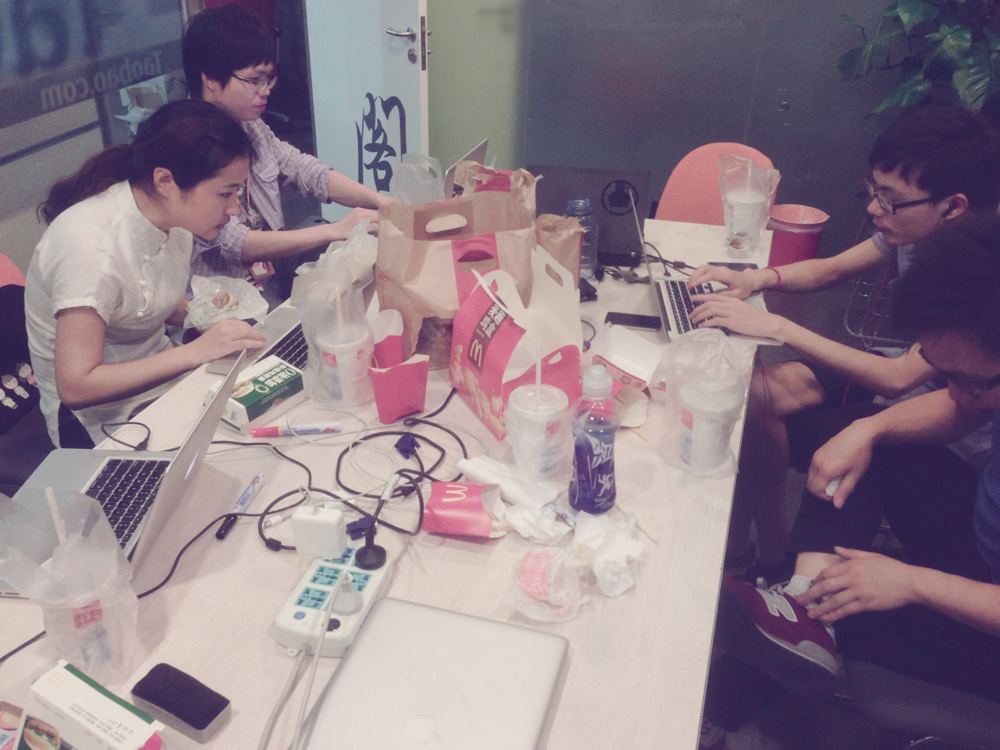
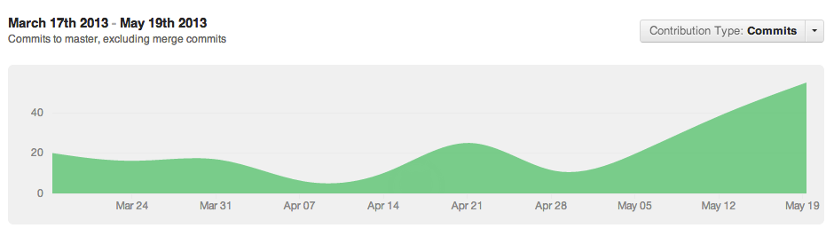
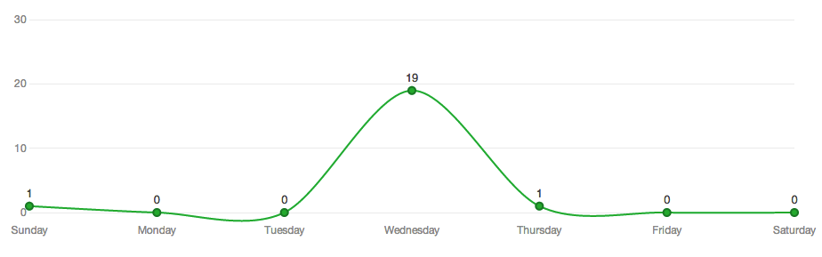
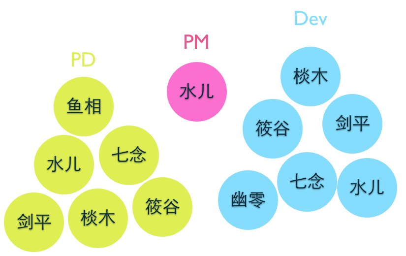

Eureka
Created by Taobao UED FEM - Eureka小组
Eureka前传
Eureka 小组
11267 lines of code
412 commits
相约星期三
Eureka 小组
Eureka, a tiny, but real application
产品背景
签到信息和反馈信息对于分享会有重要的价值
传统的签到和反馈方式需要大量的人工参与来完成数据的融合汇总
How
手势部分
遇到的问题
- 多个手势事件间冲突
- KISSY TapHold 事件很坑爹
- 基于 transform2d:matrix 的拖拽手势框架 DragSwitch
1. 多个手势事件间冲突
如果两个手势都是向右拖拽，那怎么判断该触发哪个？
解决方法：每个手势使用敏感度设置（touchMove 的距离），应该优先触发的手势设置高敏感度，触发时阻止 touch 事件继续传递，防止下一个手势触发
2. KISSY TapHold 事件很坑爹
KISSY 的 TapHold 事件必须 touchMove 一下才能触发，如果 PC 上用鼠标模拟这个事件则必须也移动一下鼠标，很诡异。
但 KISSY 为什么可以这么做咧？
因为大多数移动设备，当你一直按住屏幕，以为只有 touchStart 的时候，其实也有 touchMove 事件被触发；理论上手指头越胖的人，touchMove 事件越容易被触发。
3. 基于 transform2d:matrix 的拖拽手势框架 DragSwitch
eureka 分享会卡片切换效果的实现使用了此框架
第一个版本功能十分简单，只支持上下左右四个方向自定义拖拽手势
兼容所有支持 transform2d 的浏览器
可在此基础上扩展更多拖拽手势，如 scrollView（但因为数学和物理没学好，惯性滚动的算法一直没搞出来）
代码混乱，无注释无文档状态，后面会整理提交到 kissy gallery
技术框架
- NodeJS + MongoDB
- expressjs, jade, mogoose, socket.io, kissy, stylus
- nobuc, user, db